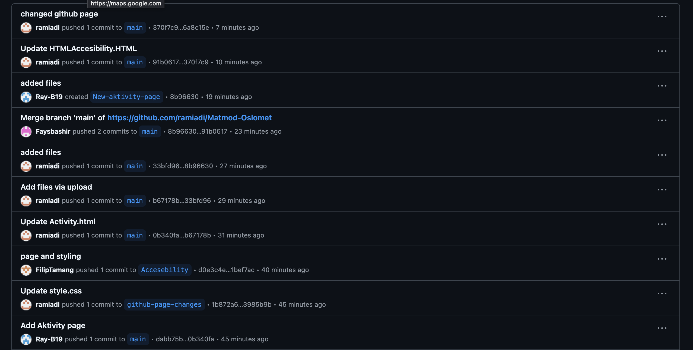
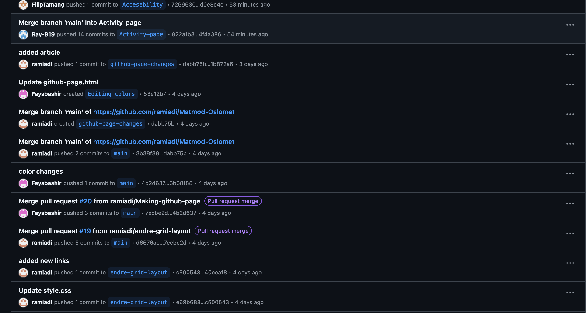

Samarbeid ved bruk av Github
Endringer og forbedringer av koder
GitHub gjorde det enkelt med å endre linjer slik at alle teammedlemmer kan se på de nyeste kodene som har blitt lagt til. Vi valgte å bruke Github Desktop. Github Desktop gjorde det lett å opprette flere braches og gi de nyeste oppdateringene slik at alle sammen kan se hvilken endringer har blitt gjort. Gjennom pull request kan alle sammen i laget kommentere og godkjenne endringer før det blir lagt til i hovedkoden (main). Ved å bruke Github gjorde det at koden ble ryddig og oversiktlig


Historikk over Commits
Ved å bruke Github gjorde det lettere å se på spesifikke endringer som en teammedlem har gjort. Vi brukte Github desktop som gjør det enkelt for teammedlemmer for å spore etter endringer i våres prosjekt over tid. Commit-historikken i Github gir detaljer om hver endring , hvem som har gjort den, hva som er blir endret og når endringen har skjedd. Dette gjør at teamet får et klart bilde av utviklingen av prosjekter og det gjør det lettere å finne og forstå feil i kodebasen.
 Fordeler ved Bruk av Git
Sporbarhet: Git gir en tydelig historikk over alle endringer, slik at teamet kan spore utviklingen av prosjektet og gjenopprette tidligere versjoner hvis det oppstår problemer.
Parallell utvikling: Flere utviklere kan jobbe på samme prosjekt samtidig uten å overskrive hverandres kode, takket være branch-funksjonaliteten.
Effektiv feilsøking: Ved hjelp av commits og branches kan man isolere og løse feil raskere.